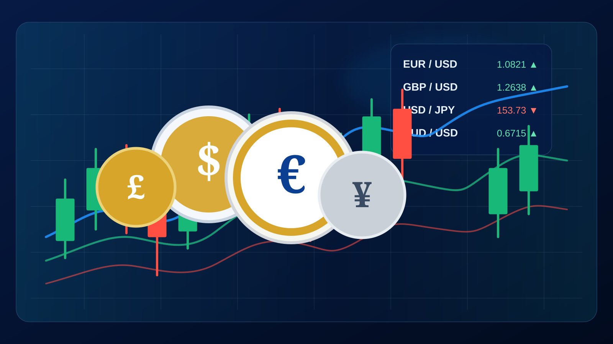

IB、券商和客户之间是什么关系？
IB是Introducing Broker（介绍经纪人）的简称。简单理解，IB负责把有交易需求的客户介绍给券商，并提供开户、账户归属或后续服务。客户产生符合条件的交易后，券商会根据具体合作安排向IB支付佣金。
基本流程如下：
因此，“返佣”并不是凭空产生的钱，而是IB决定把自己可分配佣金中的多少返还给客户。
为什么不同返佣平台给出的金额不一样？
IB可以保留佣金，也可以把更多返给客户。
这也是为什么同一个券商、同一种账户，在不同返佣网站看到的数字可能不同。客户真正应该关注的不是“最高返佣”四个字，而是自己这个账户、这个品种、每一标准手最后实际能拿到多少。
那什么叫“满返”？
满返不等于退回全部点差和手续费。
满返网所说的“满返”，是指在账户归属正确、交易符合平台规则并通过审核的前提下，将可分配给我们的IB佣金按当前方案返还给客户，不再额外从中抽取服务分成。
以满返网当前展示的TMGM STD黄金方案为例：
| 方案示例 | 每标准手返佣 |
|---|---|
| 其他常见返佣方案示例 | 18美元 |
| 满返网当前方案 | 20美元 |
| 每手差额 | 2美元 |
实际返佣资格、账户组别和金额仍以平台后台记录及审核结果为准。
每手只差2美元，为什么EA和高频交易者特别在意？
对EA、量化或高频交易者，每手差额会随交易量累积。
| 每月交易量 | 每月多返 | 一年多返 |
|---|---|---|
| 100手 | 200美元 | 2,400美元 |
| 500手 | 1,000美元 | 12,000美元 |
| 1,000手 | 2,000美元 | 24,000美元 |
所以高频客户真正应该比较的是长期综合成本，而不是只看开户时宣传的某一个点差或手续费数字。
返佣透明度为什么重要？
客户至少应该能回答四个问题：
- 我的账户属于什么组别？
- 我主要交易的品种每手返佣是多少？
- 账户是否已经正确归属到对应IB？
- 最终到账金额是否能和自己的交易记录核对？
这也是满返网持续公开TMGM返佣、TMGM账户类型、开户链接、新老账户处理方式和交易成本的原因。我们希望客户在交易前就知道佣金如何计算，而不是等结算后才发现自己少拿了一部分。
返佣降低成本，但不是赚钱策略
为了多拿返佣而故意增加交易频率并不合理。交易次数增加，同时也会增加点差、手续费、滑点和市场风险。
正确的理解应该是：如果这些交易本来就会发生，那么返佣可以降低其中一部分成本。对于本来就在使用EA、系统化策略或高频交易的用户，每手返佣差异才会随着自然交易量逐渐放大。
一句话理解IB、返佣和满返网
本文为满返网原创整理，核心概念参考公开行业返佣说明后重新编写，重点结合本站IB、TMGM返佣与满返服务场景。